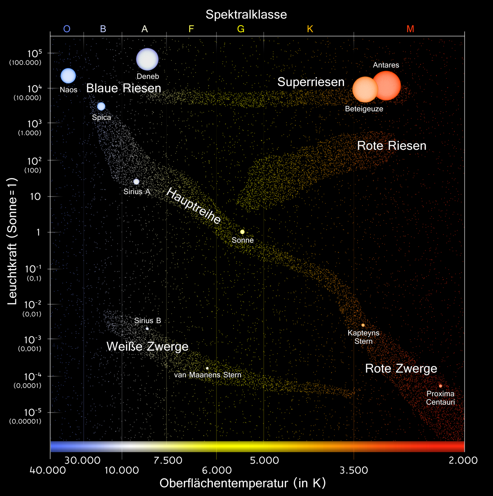
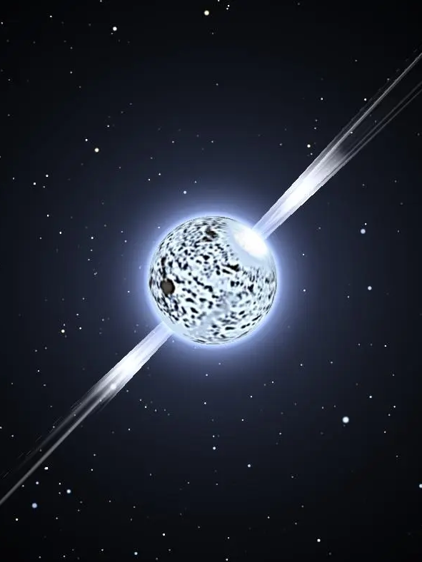

Stellare Evolution
Maximilian Linhoff
PeP et al. Sommerakademie 2022
Was ist eigentlich ein Stern?

Aufbau eines Sterns
- Energiegewinn durch Kernfusion
- Oberflächentemperatur → Farbe (Planck)
- Je schwerer ein Stern, desto mehr Leistung
→ heller, heißer, kürzere Lebensdauer - Großteil der Lebenszeit Wasserstoff → Helium
 Die Sonne im Infrarot
Die Sonne im Infrarot
Unsere Sonne
| Oberflächentemperatur | 5500 °C |
| Kerntemperatur | 15.6 Millionen °C |
| Radius | 696 342 km |
| Leuchtkraft | \(3{,}8 \cdot 10^{26}\) W |
| Masse | \(2 \cdot 10^{30}\) kg |
| Alter | ca. 4,5 Mrd. Jahre |

Das Hertzsprung-Russel-Diagramm

- Vorherrschender Prozess bei „niedrigen“ Temperaturen
→ Auch in der Sonne - Erzeugt Neutrinos bis ≈ 0,4 MeV
Die PeP-Reaktion
\[ \mathrm{p} + \mathrm{e}^- + \mathrm{p} \to {}^2_1 \mathrm{H} + \mathrm{\nu}_{\mathrm{e}} \]
In der Sonne: 400x seltener als pp
Aber: „hochenergetische“ Neutrinos (1,42 MeV)
Bethe-Weizsäcker-Zyklus

Prozessraten

Stellare Evolution
Der Pfad der Sonne durchs Hertzsprung-Russel-Diagramm
Die Hauptreihe und ihre Nebenzweige


©ESA
Kräfte in einem Stern
- Gravitation
- Strahlungsdruck
- Elektronen-Entartung
- Neutronen-Entartung
- Quark-Entartung?

 Krebsnebel, SN 1054, Hubble Telescope
Krebsnebel, SN 1054, Hubble Telescope
Supernovae
- Eisen ist das schwerste Element dessen Fusion Energie liefert
- Nach der Eisenfusion kollabiert der Stern
- Gewaltige Explosion wenn kollabierende Materie auf Eisenkern trifft
- Erzeugt schwerere Elemente und schleudert sie in die Umgebung

Neutronensterne und Pulsare
- Maximale Masse für W. Zwerge:
Chandrasekhar Limit: \( \approx 1.4 m_{☉} \) - \(p + e \to n\)
- 1 Atomkern mit ≈20 km ø
- Drehimpulserhaltung!
- Magnetfeld bis 1011 T
Vela Pulsar in Röntgenstrahlung (CHANDRA)
Schwarze Löcher

Neutronensterne und Pulsare
- Maximale Masse für Neutronensterne:
Tolman-Openheimer-Volkoff Limit:
\( m_{\mathrm{TOV}} \approx 2.3 m_{☉} \) - QCD für Quarkplasma nicht gelöst
→ Existenz von Quarksternen unklar - Kollaps zum schwarzen Loch ab welcher Masse?
Sternentstehung
Sternentstehungs-Gebiete


Protostern in Gas-Schicht (ALMA)

JWST Kernfragen
- Wie kollabieren Stern- und Staubwolken um Sterne zu bilden?
- Warum entstehen die meisten Sterne in Gruppen?
- Wie genau entstehen Planetensysteme?
- Wie entwickeln sich Sterne und wie gelangen schwere Elemente in den freien Raum?
Wie möchte JWST diese Fragen beantworten?